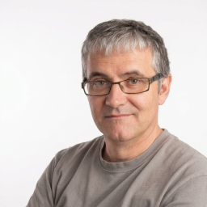

Desarrollo de Aplicaciones Web - DAW
Colegio Liceo La Paz 2025-2027 (en curso)

Desarrollo de Aplicaciones Web
 600 74 88 99
600 74 88 99
 Ciudad Vieja - La Coruña
Ciudad Vieja - La Coruña
Español y gallego
Actualmente curso 2º de Desarrollo de Aplicaciones Web. Me interesan especialmente el backend, las redes y los sistemas, aunque estoy abierto a otras áreas del desarrollo web.
He trabajado más de 20 años en restauración, asumiendo progresivamente responsabilidades hasta coordinar varios establecimientos. Esta experiencia me ha aportado habilidades de organización, trabajo en equipo y resolución de problemas.
Colegio Liceo La Paz 2025-2027 (en curso)
CIFP Imaxe e Son 2003-2006
(FCT pendiente)
IES Fernando Wirtz 2000-2003
WordPress Credits - WordPress Foundation (2026)
Aplicación web familiar desarrollada con HTML, CSS, JavaScript, PHP y MariaDB. Alojada en un servidor Linux propio con Apache y acceso remoto mediante Cloudflare Tunnel.
Tecnologías utilizadas durante mi formación en DAW y en proyectos personales.
Coordinación y supervisión de hasta ocho establecimientos, comunicación entre locales y departamentos de la empresa, y resolución de incidencias.
Gestión de personal, pedidos, inventario y caja. Supervisión del establecimiento y resolución de incidencias.
Control técnico de emisiones durante fines de semana y sustituciones por vacaciones.